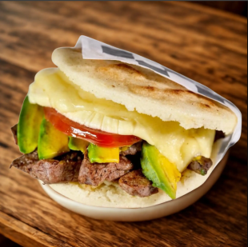

La Llanera
Home

Description
Las arepas llaneras are a classic Venezuelan style of arepa that originates
from the "Llano" plains. They are famous for being stuffed with a hearty and flavorful stew called
"carne mechada" (shredded beef cooked with tomatoes, onions, and peppers).
Ingredients
- -Precooked corn flour (e.g., Harina P.A.N.)
- - Warm water
- - Salt
- -Oil (for cooking)
- -Cheese(Queso de Mano)
- -Shredded Beef or chicken
- -Tomatoes
- -Avocado
Step by Step
- Meassure the Ingredients
- Mix the Dough
- Knead and Rest
- Shape the Arepas
- Coon on Skillet
- Bake for Fluffiness(Optional)
- Slice and Fill